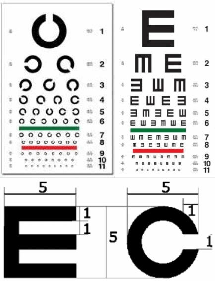

“活人还能被尿憋死不成？”（续）
以三镚子经为例测试JavaScript/JSON/PouchDB/SVG的浏览器应用

对数视力表
三镚子经
一上
二上
三上
四上
一中
二中
三中
四中
一下
二下
三下
四下
查询并显示
镚符：
路径：
洟仮名
ハナカナ
素材：
Hanákana
主页：
tone-script
许可：
Apache License Version 2.0, January 2004
实践
字符：
路径：
注释：